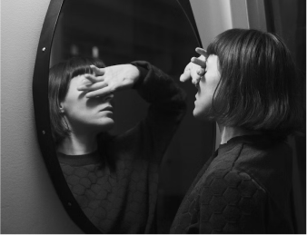

Метрогил ®

Метрогил / Блог / Популярные мифы про акне: диета, советы и врачи
Метрогил / Блог / Тренд на естественность при проблемной коже. Современный подход к красоте
Тренд на естественность при проблемной коже. Современный подход к красоте

11.12.2022

1 034

5 мин

Тренды в уходе за лицом постоянно меняются. Еще недавно иконами стиля были звезды в боевой раскраске из девяностых.
Сейчас такой макияж кажется забавным, но тогда все рисовали ярко-желтые и зеленые тени, начеёсывали челки и были в восторге от своего отражения в зеркале.
Сегодня мы наблюдаем тренд на бодипозитив, естественность и природную красоту. Казалось бы, что тут сложного – , достаточно не наносить макияж и ухаживать за собой.
Нет макияжа – нет проблемы,: так ли это?
Сегодня в моде красивая, ухоженная, увлажненная кожа и минимум косметики. Следование тренду помогает многим женщинам избавиться от необходимости каждый день наносить макияж, но не меняет отношения к проблемной коже.
Если раньше высыпания замазывались несколькими слоями тонального крема, то теперь на смену приходит простая истина «недостатки кожи нужно лечить, а не скрывать».
Для лечения и профилактики проблемной кожи при розацеа используйте средство «Метрогил® гель». Они действуеют направленно, уменьшая жирность кожи, воспаление и зуд.
При угревой сыпи используйте «Метрогил® А», которыйое бережно очищает, увлажняет кожу и снимает воспаление.
Откуда пришла мода на натуральность?

В 2015 году на Ннеделе высокой моды в Нью-Йорке состоялся показ Марка Джейкобса, где девушки вышли на подиум практически без косметики. Затем последовала аналогичная рекламная кампания с участием знаменитых моделей. Постепенно другие бренды тоже отказываются от яркой косметики на моделях.
В 2016 году американская пианистка и ритм-энд-блюз певица Алиша Киз снялась без макияжа для обложки своего альбома Here. Затем так же появилась на красной дорожке MTV Video Music Awards. Алиша стала однимой из основоположников no make-up тренда и до сегодняшнего дня придерживается своих принципов и появляется на публике либо с минимальным нюдовым макияжем, или либо вовсе без него.
Помните, как в 2016 – 2017 годах резко возросли продажи корейской косметики? Производители сделали ставку именно на натуральность. Появились ВВ- и CC- кремыа, которые маскировали недостатки и, при этом были едва заметны на лице.
No make-up диктует: не перегружайте кожу лица декоративной косметикой, будьте собой и не стесняйтесь. Больше нет необходимости скупать тоннами тональные кремыа и консилеры. Достаточно иметь в своей косметичке качественную уходовую косметику, а в аптечке хорошие лечебные средства.
Вас может заинтересовать

здоровье
К какому врачу обратиться с подозрением на розацеа?

психология
«Не хочу смотреть на себя в зеркало» или как справиться с акне

здоровье
Может ли диета помочь при розацеа

КИНО
3 героини с «дефектами» внешности